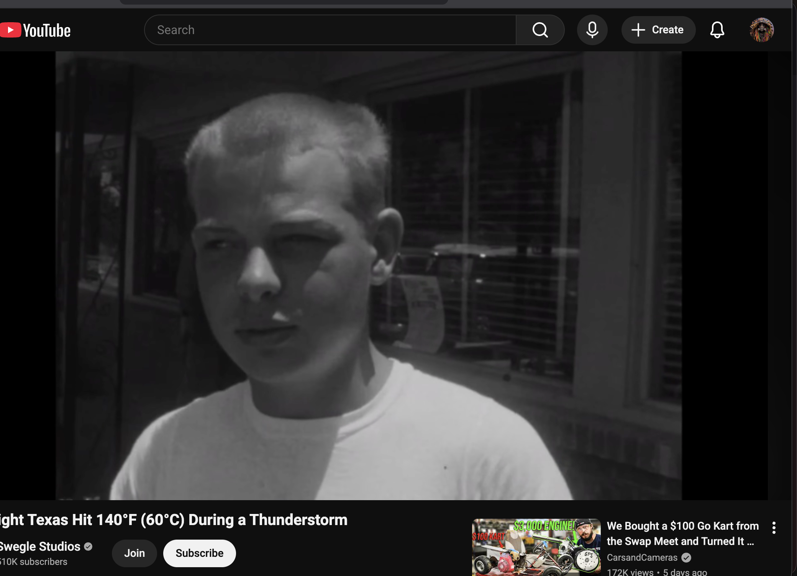
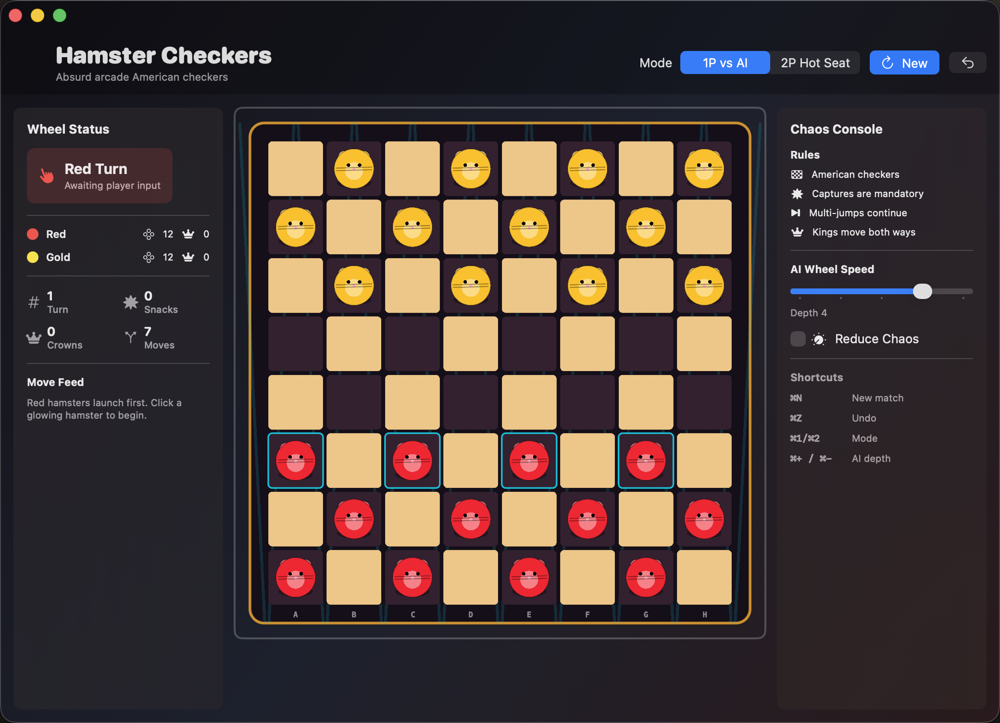

Solo AI
Play fast local matches against the built-in AI with adjustable difficulty and instant board feedback.
iPhone, iPad, and Mac
Classic American checkers with animated hamster pieces, local AI, hot-seat 2P, and Game Center turn-based online matches.

Mandatory captures, multi-jumps, kings, legal move highlights, and win detection keep the rules honest while the presentation keeps the match loud and playful.
Play fast local matches against the built-in AI with adjustable difficulty and instant board feedback.
Share one iPhone, iPad, or Mac for a same-device hot-seat match with undo and clear move history.
Use Game Center turn-based matches to invite friends, Auto-Match, refresh active matches, and resume your turn.
